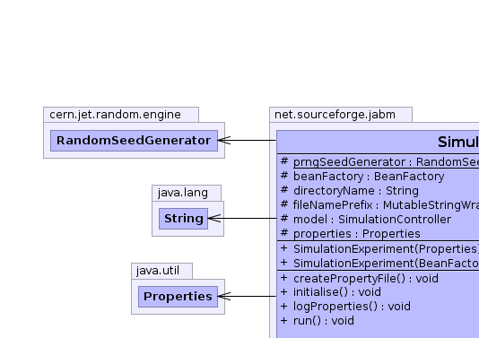
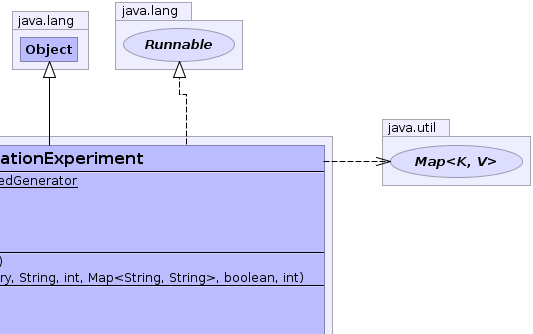
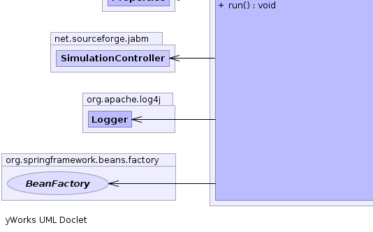
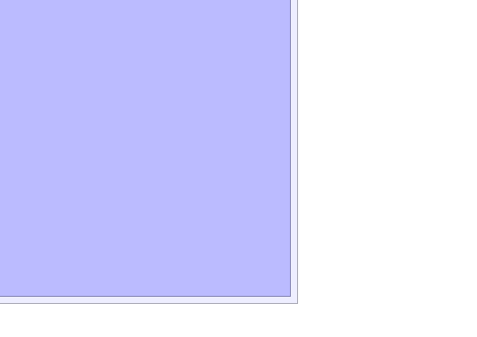

net.sourceforge.jabm.SimulationExperiment
net.sourceforge.jabm.SimulationExperiment
|
|||||||||
| PREV CLASS NEXT CLASS | FRAMES NO FRAMES | ||||||||
| SUMMARY: NESTED | FIELD | CONSTR | METHOD | DETAIL: FIELD | CONSTR | METHOD | ||||||||
java.lang.Object
public class SimulationExperiment
A simulation experiment represents a simulation and a corresponding treatment: that is, a set of parameter bindings represented as Java Properties.
|  |  |
|  |  |
| Field Summary | |
|---|---|
protected org.springframework.beans.factory.BeanFactory |
beanFactory
The Spring BeanFactory instance which is used to construct the model. |
protected java.lang.String |
directoryName
The path name of the directory where report data will be written to. |
protected SimulationController |
model
The SimulationController for conducting this experiment. |
protected static cern.jet.random.engine.RandomSeedGenerator |
prngSeedGenerator
|
protected java.util.Properties |
properties
The properties specified here represent parameter bindings which override those specified in the original model configuration. |
| Constructor Summary | |
|---|---|
SimulationExperiment(org.springframework.beans.factory.BeanFactory beanFactory,
java.lang.String baseDirName,
int experimentNumber,
java.util.Map<java.lang.String,java.lang.String> variableBindings,
boolean generateSeeds,
int seedMask)
|
|
SimulationExperiment(java.util.Properties properties)
|
|
| Method Summary | |
|---|---|
void |
createPropertyFile()
Save the parameter bindings of this experiment to a property file. |
void |
initialise()
Initialise the model by constructing it from the bean factory and then applying the parameter bindings specified by the properties attribute using Spring's properties post-processing feature. |
void |
logProperties()
Print a summary of the parameter bindings for this experiment to a log. |
void |
run()
Run this experiment. |
| Methods inherited from class java.lang.Object |
|---|
clone, equals, finalize, getClass, hashCode, notify, notifyAll, toString, wait, wait, wait |
| Field Detail |
|---|
protected SimulationController model
protected java.util.Properties properties
protected java.lang.String directoryName
protected org.springframework.beans.factory.BeanFactory beanFactory
protected static cern.jet.random.engine.RandomSeedGenerator prngSeedGenerator
| Constructor Detail |
|---|
public SimulationExperiment(org.springframework.beans.factory.BeanFactory beanFactory,
java.lang.String baseDirName,
int experimentNumber,
java.util.Map<java.lang.String,java.lang.String> variableBindings,
boolean generateSeeds,
int seedMask)
public SimulationExperiment(java.util.Properties properties)
| Method Detail |
|---|
public void initialise()
public void run()
run in interface java.lang.Runnablepublic void logProperties()
public void createPropertyFile()
|
|||||||||
| PREV CLASS NEXT CLASS | FRAMES NO FRAMES | ||||||||
| SUMMARY: NESTED | FIELD | CONSTR | METHOD | DETAIL: FIELD | CONSTR | METHOD | ||||||||